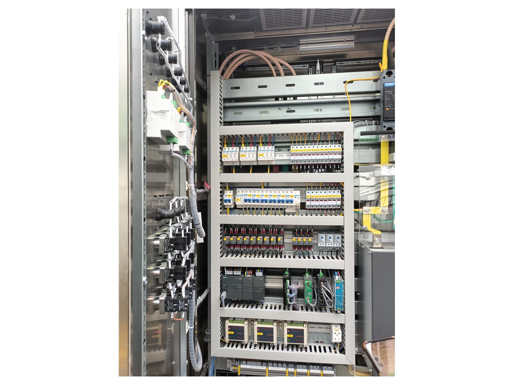

固威环保广州市固威环保科技开发有限公司
固威环保广州市固威环保科技开发有限公司适用场景
市政给排水、一体化泵站、污水处理站、小区二次供水、工业循环水及雨水回用系统的自动化控制。

市政给排水、一体化泵站、污水处理站、小区二次供水、工业循环水及雨水回用系统的自动化控制。
源头工厂自主生产，可按现场工艺出控制方案、电气原理图与施工图，提供编程调试与技术交底，诚邀工程商、总包合作。
根据现场工艺、设备清单与控制要求确定配置，具体型号与参数待确认。
PLC 主控、模块化柜体，出厂预装调试。
〔待确认：PLC 品牌与型号、柜体尺寸、防护等级及供电条件〕
集中管控水泵、阀门、加药与仪表设备，按液位、压力、流量自动控制。
〔待确认：设备数量、输入输出点位、变频器功率及联锁要求〕
预留 RS-485、以太网接口，支持上位机或第三方平台接入。
〔待确认：通信协议、远程平台、网络条件与访问权限〕
控制柜内部元件、线路与现场调试实拍，点击图片可放大查看。
